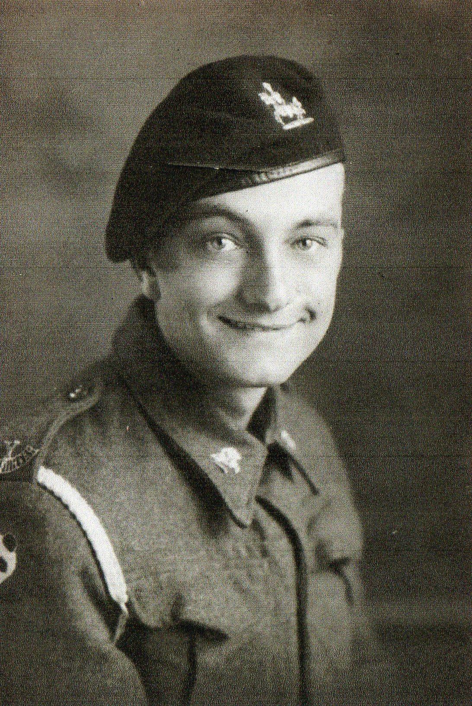
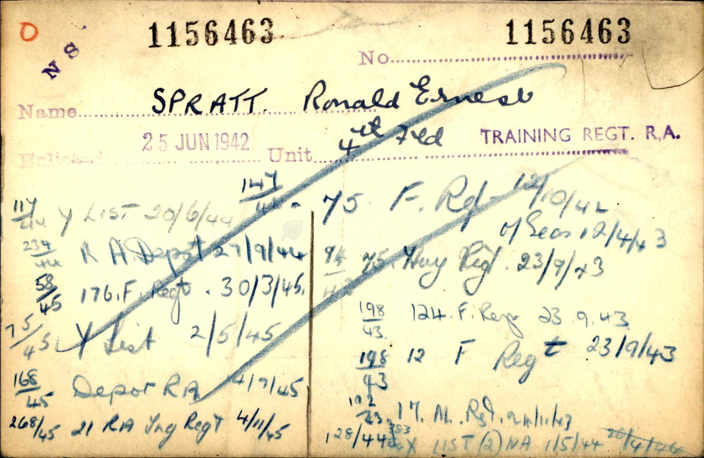

Ronald Ernest Spratt 1919 - c1991 [ Home ] | [ Calendar ] | [ Surnames Index ] | [ Family History ]A barman and the son of Leonard Spratt (an agricultural labourer) and Rose Dennett Ronald Spratt , the first cousin once-removed on the father's side of Nigel Horne , was born in Thanet, Kent, England on 14 Apr 19191,2,3,4,5 and. He married Maisie Grant (with whom he had 4 surviving children Ann Phyllis , Ian Ronald , Christine R and David J ) in Thanet around Aug 19396 .
Throughout his life, he lived at 11 Upper Grove, Margate, Kent, England on 19 Jun 19211 ; and at 49 Pound Lane, Canterbury, Kent on 29 Sept 19392 . During 1942, he was serving in the Military (regiment: Royal Artillery; Rank: Gunner / Driver; Service number: 1156463 ).
He died c. Aug 1991 in Ashford, Kent, England3,5 .
Parents Leonard was born on 9 Sept 1877Rose Ethel Muskett was born on 23 Jun 1887Citations 1921 Census Of England & Wales - Findmypast (was age 2 and the son of the head of the household) 1939 Register - Findmypast (was recorded at this address) England & Wales deaths 1837-2007 - Findmypast England & Wales, Birth Index: 1916-2005 Online publication - Provo, UT, USA: The Generations Network, Inc., 2008.Original data - General Register Office. England and Wales Civil Registration Indexes. London, England: General Register Office. © Crown copyright. Published by permission of the Cont England & Wales, Death Index: 1984-2005 Online publication - Provo, UT, USA: The Generations Network, Inc., 2007.Original data - General Register Office. England and Wales Civil Registration Indexes. London, England: General Register Office. © Crown copyright. Published by permission of the Cont England & Wales, Marriage Index: 1916-2005 Online publication - Provo, UT, USA: The Generations Network, Inc., 2009.Original data - General Register Office. England and Wales Civil Registration Indexes. London, England: General Register Office. © Crown copyright. Published by permission of the Cont Notes Ron was a talented pianist who played by ear. He was popular in pubs and was never short of a pint.
Media Ronald Spratt 2 Ronald Spratt - 4 Ronald Spratt - 5 Ronald Spratt - 6 Ronald Spratt - 7 Ronald Spratt  Ronald Spratt - 8 Ronald Earnest Spratt - WW2 Record  England & Wales deaths 1837-2007 - BMD/D/1991/9/78715706 England & Wales births 1837-2006 - BMD/B/1919/2/AZ/001052/029 England & Wales marriages 1837-2008 - BMD/M/1939/3/PZ/000389/117 1939 Register Transcription - TNA-R39-1678-1678I-008-15 Royal Artillery attestations 1883-1942 Image - GBM-ROYALART-1156000-00050 British Army Casualty Lists 1939-1945 - GBM/WO417/0685077 World War 2 Allies Collection - WW2/03256442 World War 2 Allies Collection - WW2/02347768 1921 Census Of England & Wales - GBC/1921/RG15/04446/1191/04 Family Tree Map
Generated by ged2site . Last updated on Feb 19, 2025